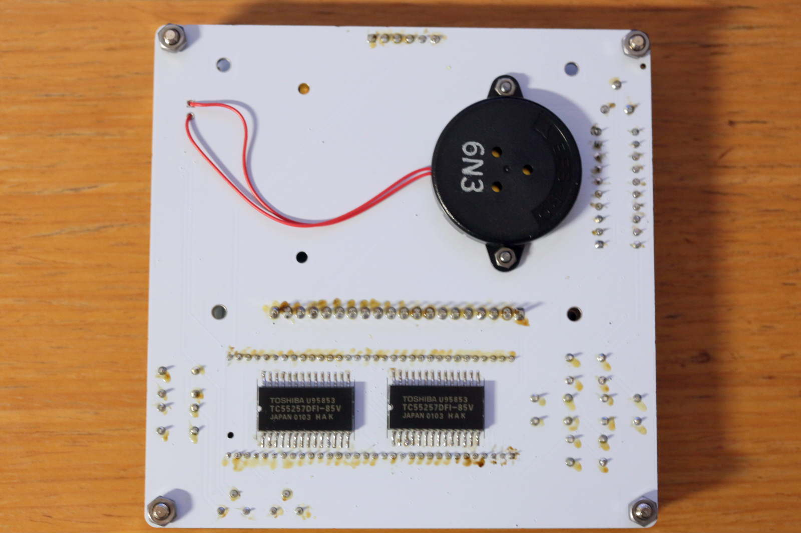
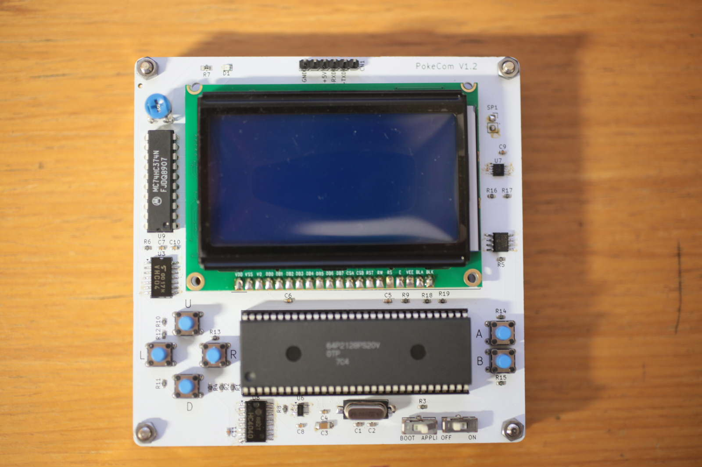
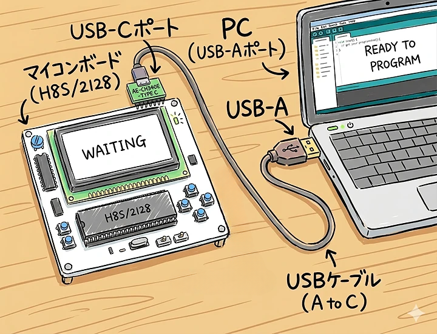
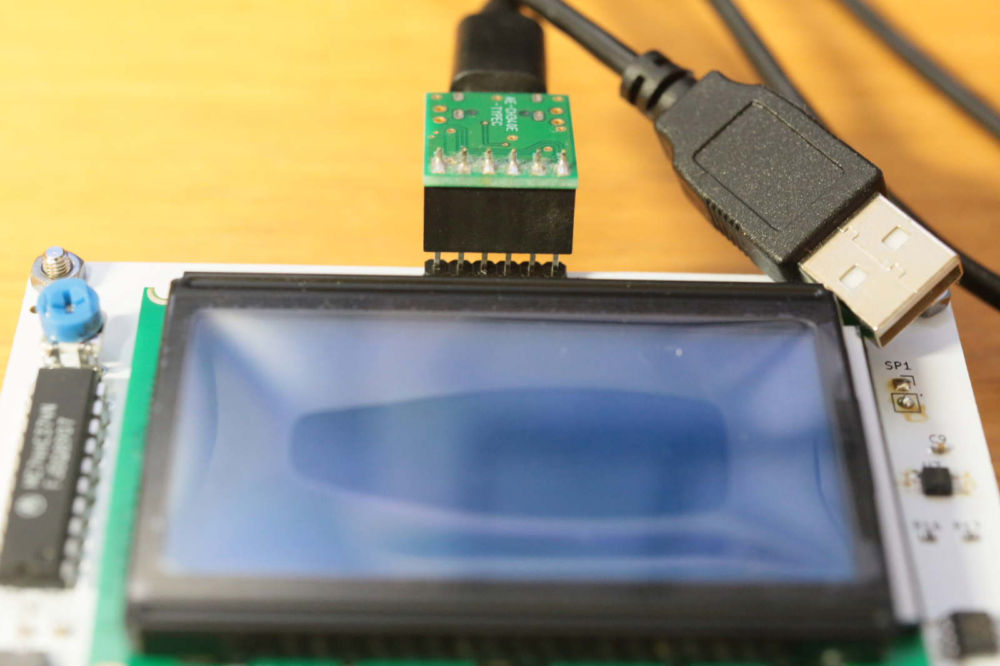
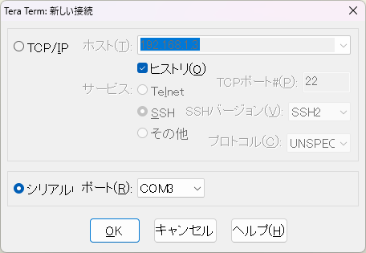
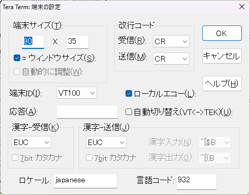
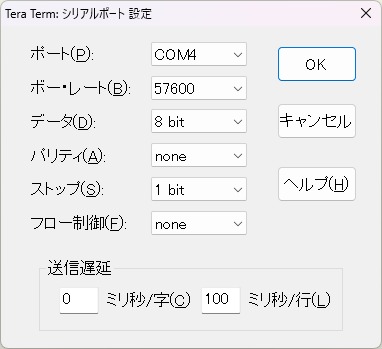
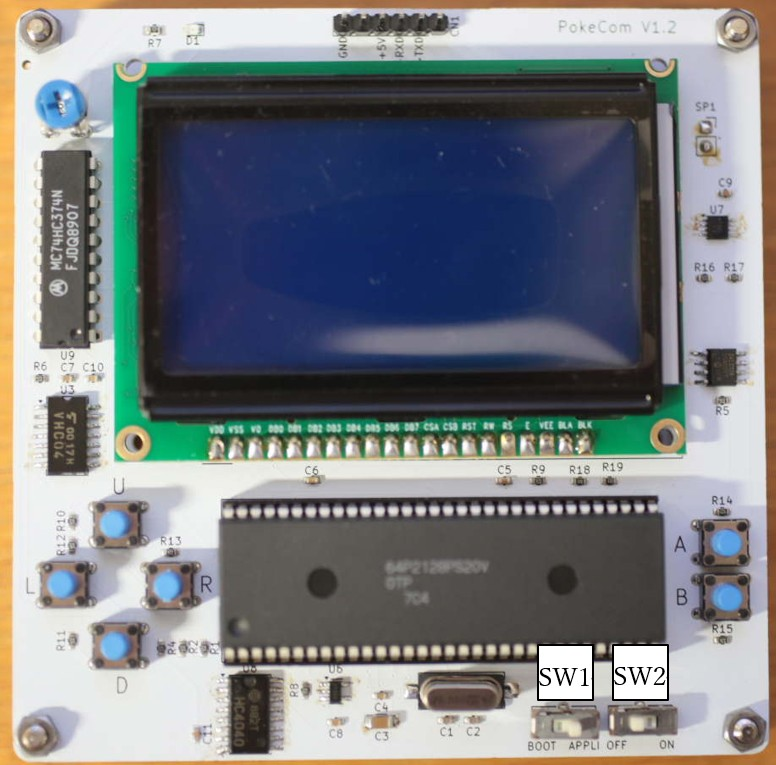
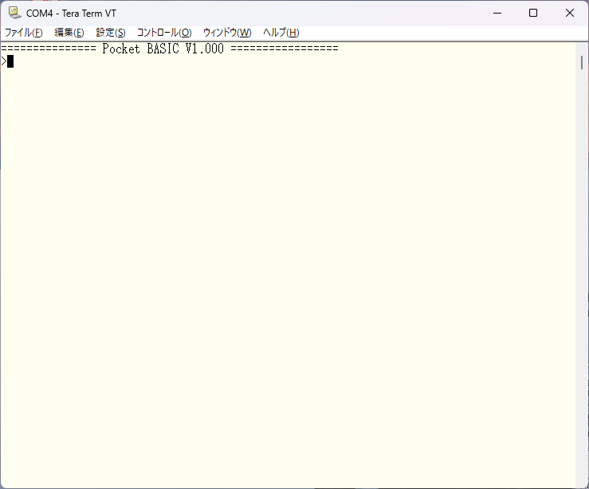
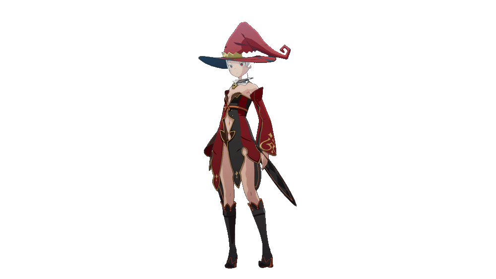

使い方
ご購入
下記のIconをクリックすると販売ページが開きます。こちらは、半田付け不要のキットになります。よかったら、ご購入ください。

BASICマイコンのスペック
【説明】
PCとUSBケーブルで接続して使うことを前提としたBASICマイコン。
PCからBASICプログラムをマイコンにダウンロードして実行する。
組立
①左の形で梱包されているので、四隅のナットを外して、天板を裏返して取り付けて、右のように組み立ててください。


②下の写真のように、PCとマイコンを接続してください。
マイコン側は右の写真のようにAE-CH340Eボードを
マイコンにさして接続します。



PC側の設定
TeraTermをインストールして、マイコンのケーブルをPCのUSBポートに接続して増えたCOMポートを指定して接続してください。 その後、端末の設定とシリアルポート設定を下のように設定してください。



電源を入れる
SW2をONにして、電源を投入する。（SW1は常にAPPLI側にしておいてください。） 左に示す起動メッセージが出れば、OKです。



BASICプログラムを動かす
①BASICプログラムを投稿サイトからダウンロードします。 ②TeraTermの「ファイル＞ファイル送信」をメニューから選んで表示されるダイアログで、ダウンロードしたBASICプログラムを選択します。（左下の写真） ③右下の写真のようにBASICプログラムがマイコンに転送されます。 ④終わったらTeraTermでrunと入力して改行してください。 プログラムが実行されます。
裏技
このマイコンは、TeraTermから入力される文字列のうち、先頭が数字の行はプログラムとして取り扱います。
下記のようにラインエディタのように振る舞います。
・行番号が重複していれば、行を入れ替えます。
・行番号のみの場合、同じ行番号があれば、その行は削除されます。
・行番号がまだなければ、プログラムに１行追加（挿入）されます。
なので、プログラムを実行して、エラーがあった場合は、修正した部分だけをTeraTermに入力すると、
その部分だけを修正できます。
（削除した行があると、行番号だけを入力しないと消えないので要注意です。）
これは、プログラムを開発するときに、意外に便利な小技なので、よかったら使ってみてください。